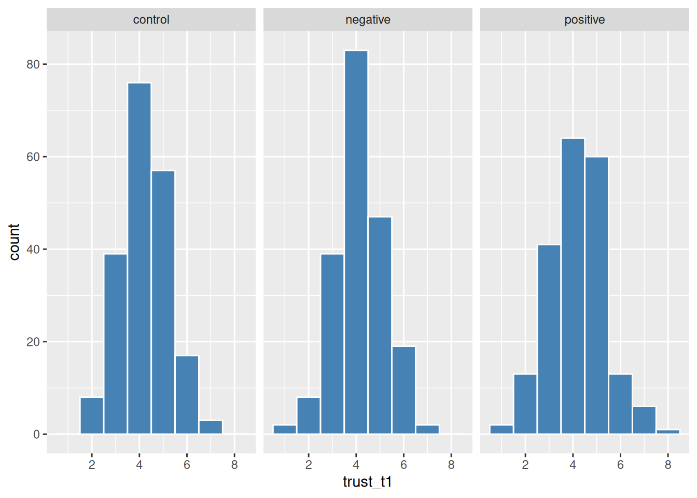
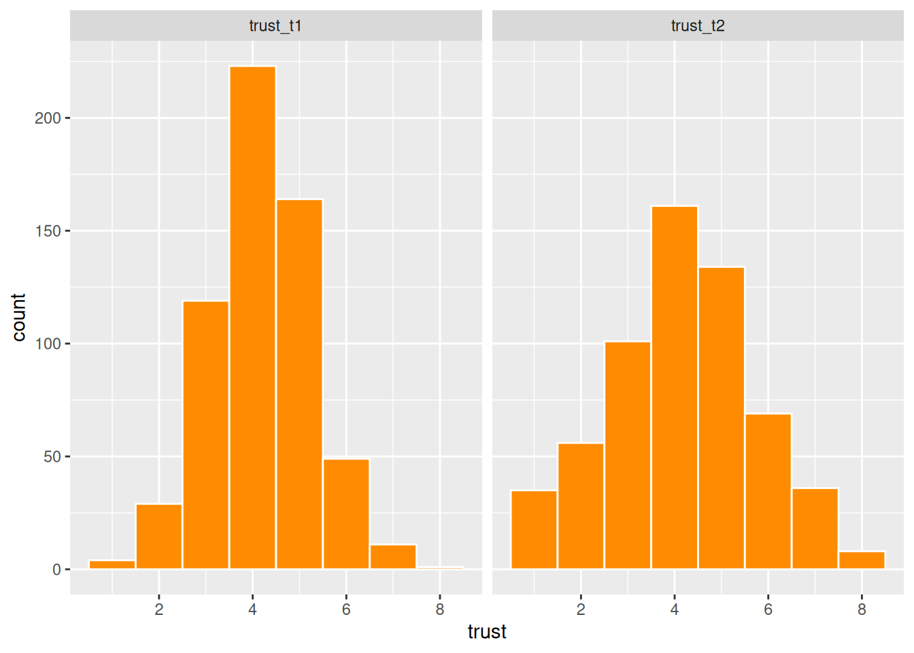
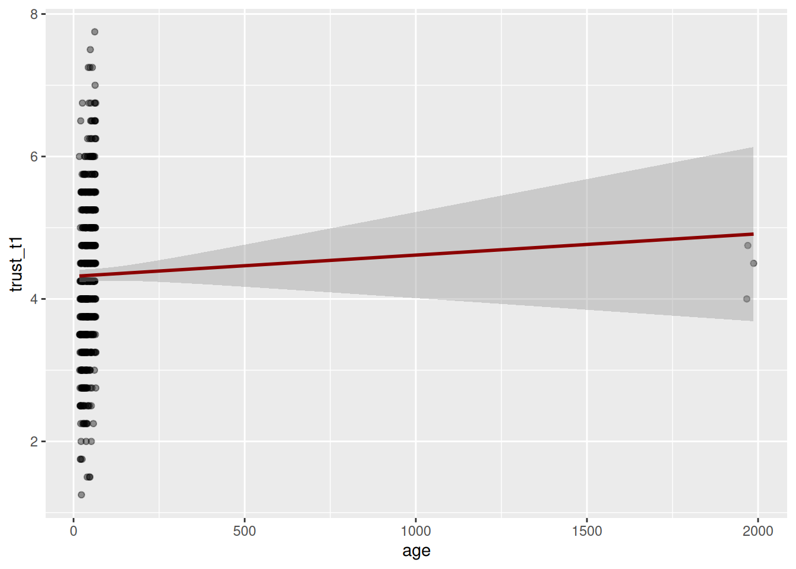
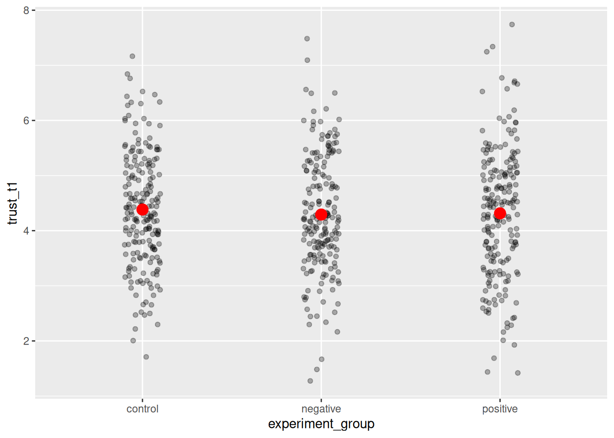
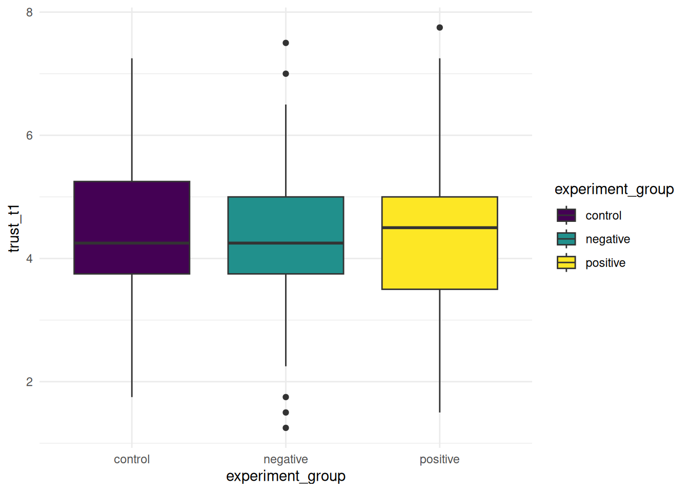

library(tidyverse)
d <- read_csv("https://dev.dataliteracy.cc/practice_data.csv")4.3 Advanced Visualization
Advanced visualization techniques: pooling, faceting, and interactive plots.
You arrive here from Data Visualization and Pivoting and joining, so you can already make a basic plot and reshape data into long format. Here you’ll learn to split one plot into several small, comparable panels with faceting, combine multiple geoms in a single plot, and make deliberate choices about color and clarity so your plots are easy to read for everyone — including colorblind readers. These are the techniques that turn a quick exploratory plot into one you’d actually put in a report or a paper.
→ See this module in the skill tree
WarningAI-assisted draft
This content was drafted by an AI assistant and has not yet been manually checked by course staff. Treat it as a starting point, not a verified source.
4.3.1 Faceting: small multiples
We’ll continue with the same practice dataset:
Faceting splits one plot into a grid of small panels, one per level of a categorical variable — so instead of squeezing several groups into a single crowded plot (e.g. by color), you compare them side by side. Add facet_wrap(~ variable) to any existing ggplot2 call:
ggplot(d, aes(x = trust_t1)) +
geom_histogram(binwidth = 1, fill = "steelblue", color = "white") +
facet_wrap(~experiment_group)
This is often clearer than overlapping histograms or densities, especially once you have more than two or three groups. You can facet by two variables at once with facet_grid(row_var ~ col_var), which arranges panels in a full grid instead of wrapping them into rows.
Faceting also works well with long-format data (see Pivoting and joining). For example, say we want to compare trust at two time points (trust_t1 and trust_t2) in one plot. First we pivot the two columns into a long format with a time and a trust column, then facet by time:
d_long <- d |>
pivot_longer(cols = c(trust_t1, trust_t2), names_to = "time", values_to = "trust")
ggplot(d_long, aes(x = trust)) +
geom_histogram(binwidth = 1, fill = "darkorange", color = "white") +
facet_wrap(~time)
4.3.2 Combining geoms
A single plot can layer multiple geoms on top of each other, as long as they share (or can use) the same aesthetic mapping. A common combination is points plus a fitted trend line, using geom_smooth():
ggplot(d, aes(x = age, y = trust_t1)) +
geom_point(alpha = 0.4) +
geom_smooth(method = "lm", color = "darkred")Warning: Removed 5 rows containing non-finite outside the scale range
(`stat_smooth()`).Warning: Removed 5 rows containing missing values or values outside the scale range
(`geom_point()`).
Each geom is added as its own layer, drawn in the order you add it — here the points are drawn first, and the trend line on top. You can also combine a summary geom with the raw data, for example showing each group’s mean trust as a point on top of individual observations:
group_means <- d |>
group_by(experiment_group) |>
summarise(mean_trust = mean(trust_t1, na.rm = TRUE))
ggplot(d, aes(x = experiment_group, y = trust_t1)) +
geom_jitter(width = 0.1, alpha = 0.3) +
geom_point(data = group_means, aes(y = mean_trust), color = "red", size = 4)
Notice that the second geom_point() uses its own data argument (group_means) instead of the data set up in ggplot() — this is how you combine information computed at different levels (individual observations and group summaries) in one plot.
4.3.3 Accessibility and clarity
A plot that looks fine to you may be unreadable to someone else. A few habits make a real difference:
- Don’t rely on color alone. Around 1 in 12 men have some form of red-green color blindness. If color carries meaning, also vary the shape, line type, or facet so the distinction survives if color is lost (e.g. printed in grayscale).
- Use colorblind-safe palettes. The built-in
scale_color_viridis_d()/scale_fill_viridis_d()(discrete) andscale_color_viridis_c()(continuous) are perceptually uniform and colorblind-friendly by default:
ggplot(d, aes(x = experiment_group, y = trust_t1, fill = experiment_group)) +
geom_boxplot() +
scale_fill_viridis_d() +
theme_minimal()
- Avoid chartjunk. Skip 3D effects, unnecessary gridlines, or decorative images — they add visual noise without adding information. A clean theme like
theme_minimal()already removes most of this by default. - Label directly where you can. For a small number of categories, a direct label next to each line or bar is often easier to scan than a separate legend the reader has to match back to the plot by color.
Interactive plots (for example with the plotly package, via ggplotly()) can add value for exploration — letting readers hover over points for exact values — but they don’t work in a printed PDF or a static report, so use them sparingly and only for formats that support them (e.g. an html report or a dashboard).
Further resources
- 📘 ggplot2 reference: facet_wrap() — the full set of options for faceting, including free scales and custom layouts.
- 📘 viridis color scales — documentation for the colorblind-friendly palettes used above.